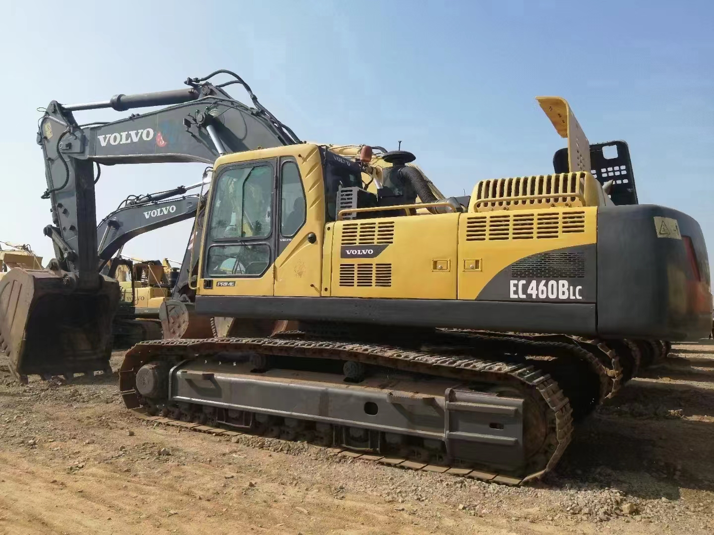

Refurbished Volvo EC460 Excavator
The Volvo EC460 is a high-performance crawler excavator designed for heavy-duty applications in construction, mining, and material handling. Known for its robust build, advanced hydraulics, and fuel-efficient engine, the EC460 is a favorite choice for businesses seeking a versatile and durable machine capable of handling demanding tasks. Opting for a refurbished Volvo EC460 offers significant cost savings while maintaining the performance and reliability Volvo is known for.
Honestly, it's almost impossible to buy a brand new excavator from China. They either don't exist or are made in China. If a Chinese seller tells you their Caterpillar/Komatsu/Volvo/Kobelco/Hitachi is brand new, they're lying. Therefore, a refurbished excavator is your best bet.

Here are the detailed specifications for a refurbished Volvo EC460 excavator:
Operating Weight and Dimensions
- Operating Weight: 46,000–48,000 kg
- Transport Length: ~12.09 meters
- Transport Width: ~3.62 meters
- Transport Height: ~4.79 meters
- Tail Swing Radius: ~3.8 meters
- Ground Clearance: ~500 mm
- Track Width: 600 mm standard
Engine and Powertrain
- Engine Model: Volvo D12C (Tier 2 compliant)
- Rated Power Output: ~250–265 kW (335–355 hp) @ 1,800 rpm
- Maximum Torque: ~1,600–1,800 Nm
- Fuel Tank Capacity: ~700 liters
- Travel Speed: 3.0–5.0 km/h
- Swing Speed: ~8.6 rpm
- Gradeability: Up to 35°
Hydraulic System
- Main Pump Type: Variable displacement axial piston pumps
- Flow Rate: ~2 × 360–380 L/min
- System Pressure: Up to 34.3 MPa
- Hydraulic Oil Capacity: ~500 liters
- Boom/Arm/Bucket Priority: Load-sensing with flow sharing
- Regeneration System: Reduces cavitation and improves cycle speed
Performance Metrics
- Bucket Capacity: 1.77–3.85 m³ (SAE heaped)
- Max Digging Depth: ~9.19 meters
- Max Reach (Horizontal): ~13.18 meters
- Max Dump Height: ~7.2 meters
- Bucket Digging Force: ~248.7 kN
- Arm Digging Force: ~180–190 kN
Cab and Operator Features
- Cab Type: ROPS/FOPS certified
- Display: Contronics system with diagnostics and fuel tracking
- Controls: Electro-hydraulic joysticks with customizable sensitivity
- Comfort: Air suspension seat, climate control, low vibration cab
- Visibility: Sliding windshield, wide glass area, rear-view camera
Smart Features and Efficiency
- Fuel Efficiency: Auto idle, ECO mode, load-sensing hydraulics
- Emissions Control: Tier 2 compliant (no DPF/SCR)
- Telematics Ready: Volvo CareTrack (optional on later refurbishments)
- Power Boost: Enhanced digging and lifting forces on demand
Attachments Compatibility
- Standard Bucket: 1.77–3.85 m³
- Optional Tools: Hydraulic breaker, demolition shear, compactor, ripper
- Quick Coupler: Hydraulic or manual options available
Refurbishment Scope
Refurbished EC460 units typically include:
- Engine Overhaul: Turbocharger, injectors, seals, cooling system
- Hydraulic Restoration: Pump recalibration, valve block testing, hose replacement
- Electrical Diagnostics: Monitor, sensors, wiring harness
- Cab Reconditioning: Seat, joysticks, HVAC, repainting
- Structural Repairs: Boom/bucket welding, bushing replacement, undercarriage rebuild
Overview of the Volvo EC460 Excavator
The Volvo EC460 is part of Volvo's larger fleet of crawler excavators, providing superior lifting power, digging depth, and versatility. It is widely used for projects that require high efficiency, such as trenching, digging, lifting, and material transportation.
Key Specifications of the Volvo EC460
-
Operating Weight: Approximately 44,000–46,000 kg (97,000–101,000 lbs)
-
Engine Power: Around 224 kW (300 hp)
-
Max Digging Depth: Up to 7.5 meters (24.6 feet)
-
Max Reach: Approximately 11.5 meters (37.7 feet)
-
Bucket Capacity: Typically 1.7–2.0 cubic meters (60–70 cubic feet)
-
Fuel Tank Capacity: Around 470 liters (124 gallons)
-
Travel Speed: Up to 5.5 km/h (3.4 mph)
These specifications reveal that the Volvo EC460 is a powerful and versatile machine, perfect for large-scale projects and heavy lifting requirements, capable of offering substantial reach and digging depth.
Engine and Performance Efficiency
The Volvo EC460 comes with a powerful engine designed to perform in even the most demanding environments. Volvo is known for its focus on engine efficiency and durability, and the EC460 is no exception.
-
Engine Power: The Volvo EC460 is equipped with a Volvo D13 engine, delivering around 224 kW (300 hp) of power. This engine ensures that the machine can handle tough tasks, including digging through hard ground, lifting heavy materials, and operating large attachments.
-
Fuel Efficiency: One of the defining features of the EC460 is its Fuel Efficiency System, designed to optimize fuel consumption. The system adjusts the engine's fuel usage depending on the workload, providing energy efficiency during lighter tasks and power when needed for heavy lifting or digging.
-
Emissions Compliance: The EC460 engine is built to meet modern environmental standards, offering low emissions and ensuring compliance with the most stringent global regulations. This helps businesses operate in areas with strict environmental policies and ensures that the machine runs cleanly while maintaining high performance.
Hydraulic System: Speed, Precision, and Control
The Volvo EC460 boasts a state-of-the-art hydraulic system that allows it to perform multiple tasks with precision and efficiency.
-
High-Performance Hydraulics: The machine’s hydraulic system is engineered to provide maximum power for digging, lifting, and other demanding tasks. With a load-sensing system, the EC460 adjusts hydraulic pressure to match the load, offering faster cycle times and reduced energy consumption.
-
Quick Cycle Times: Thanks to its powerful hydraulic pumps, the EC460 features fast cycle times, allowing for increased productivity during time-sensitive tasks. This makes it an excellent choice for operations that require high throughput, such as material handling or digging.
-
Precise Control: The EC460 offers precise control for operators, particularly during detailed tasks such as trenching or grading. The hydraulic controls allow for smooth and responsive movements, improving the accuracy and efficiency of the machine.
Durability and Construction
Built for heavy-duty work, the Volvo EC460 is designed to handle the toughest environments and most challenging job sites.
-
Heavy-Duty Undercarriage: The EC460 features a robust undercarriage, designed for durability and stability in rough terrain. With reinforced components, it can handle high-stress conditions such as muddy or uneven ground while maintaining superior balance and support.
-
Long-lasting Components: From the frame to the tracks, the EC460 is built to last. High-strength steel and reinforced components are used throughout the machine, ensuring that it can withstand the stresses of demanding construction, mining, and material handling jobs.
-
Track System: The track system on the EC460 is designed for excellent traction, even on soft or slippery surfaces. This enables the machine to work efficiently in a variety of ground conditions, reducing the likelihood of slippage and improving overall performance.
Operator Comfort and Safety Features
Volvo takes operator comfort and safety seriously, and the EC460 is equipped with features designed to enhance both.
-
Spacious Operator Cab: The EC460 features a spacious and comfortable cab with excellent visibility, ergonomic controls, and climate control systems, reducing operator fatigue during long hours of operation. The design prioritizes safety and comfort, allowing the operator to focus on the task at hand.
-
Advanced Controls and Display: The machine comes with an intuitive control system, including joysticks and a digital display that provides real-time data and machine diagnostics. The EC460 allows operators to monitor key information such as fuel consumption, engine performance, and hydraulic pressures, ensuring efficient operation.
-
Safety Features: Equipped with ROPS (Rollover Protective Structure) and FOPS (Falling Object Protective Structure), the EC460 ensures operator protection in the event of a rollover or falling debris. Additionally, the machine includes advanced warning systems, alerting operators to potential hazards or system malfunctions.
Benefits of Choosing a Refurbished Volvo EC460
Opting for a refurbished Volvo EC460 can offer businesses a cost-effective solution without sacrificing the quality and performance expected from Volvo machines.
-
Cost Savings: Refurbished EC460 excavators are typically priced at a fraction of the cost of a new machine, with savings of up to 30-40% compared to the purchase price of a brand-new model. This can be particularly advantageous for businesses with limited budgets or those looking to maximize their investment.
-
Comprehensive Refurbishment: A refurbished EC460 undergoes a detailed inspection and restoration process. This includes replacing or refurbishing key components such as the engine, hydraulic system, tracks, and electrical systems. This ensures that the machine is in optimal working condition, with performance comparable to a new model.
-
Warranty and Support: Many refurbished EC460 machines come with warranties, offering peace of mind for buyers. Additionally, factory-backed support or third-party service contracts are often available, providing continued service and parts access.
-
Environmental Responsibility: By purchasing a refurbished machine, businesses help reduce the demand for new manufacturing, thereby contributing to sustainability efforts. Refurbished equipment helps conserve resources and reduces the environmental impact of producing new machines.
Maintenance Tips for the Volvo EC460
To keep the Volvo EC460 running smoothly and extend its service life, regular maintenance is key.
-
Engine and Hydraulics: Ensure the engine oil and hydraulic fluid are regularly changed according to the manufacturer’s schedule. Check the hydraulic system for leaks and inspect all hydraulic components to maintain optimal performance.
-
Track and Undercarriage: Regularly inspect the tracks, rollers, and sprockets for wear. Keep the undercarriage clean and free of debris to prevent excessive wear. Check track tension and adjust as necessary.
-
Cab and Electrical Systems: Keep the cab clean and free of obstructions to maintain clear visibility. Regularly inspect the electrical system for any signs of corrosion or loose connections, and replace worn-out components as needed.
-
General Inspections: Conduct regular inspections of the air filters, fuel systems, and cooling systems to avoid overheating and performance issues. Regular inspections will help detect potential issues before they become serious problems.
Conclusion
The Volvo EC460 is a powerful, reliable, and durable excavator built for demanding tasks in construction, mining, and heavy-duty applications. With its fuel-efficient engine, advanced hydraulic system, and rugged design, the EC460 excels in a wide range of applications. A refurbished Volvo EC460 offers an excellent value proposition, providing substantial savings while maintaining high performance. With proper maintenance and care, a refurbished EC460 can continue to deliver exceptional results for years to come, making it an excellent choice for businesses seeking high-quality equipment at an affordable price.
Our Commitment
- 2 years / 4000 hours warranty.
- EPA certified.
- No sweatshop labor.
Contacts

- [email protected]
- Youtube Instagram Facebook
- Navigation: G206 (Sishu Bridge) in Changfeng County, Hefei City, Anhui Province, 200 meters north to the east